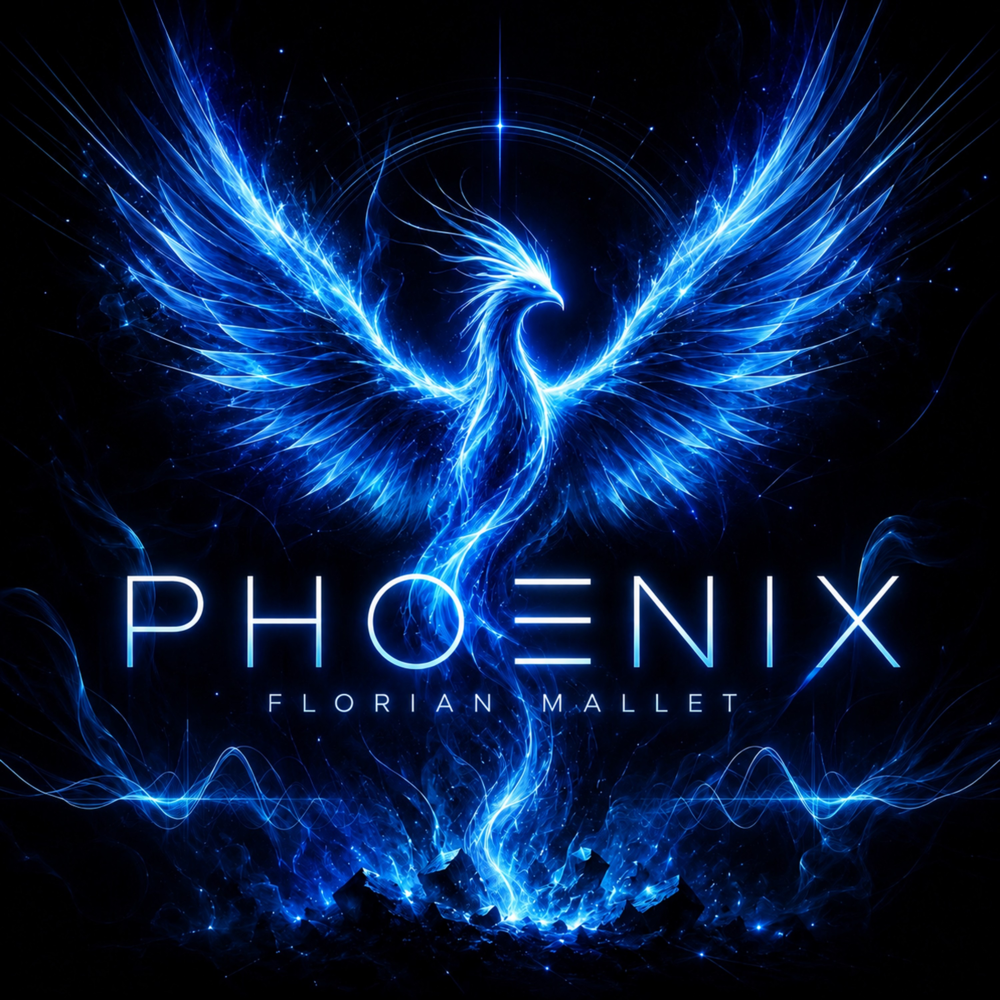

CHAPITRE 01
PHOENIX
Electronic Show n’était pas mort. Sous les années de silence, les braises ne se sont jamais complètement éteintes. Phoenix marque le moment où elles reprennent vie : le retour à la création, la renaissance du projet et celle de Florian Mallet derrière la musique.